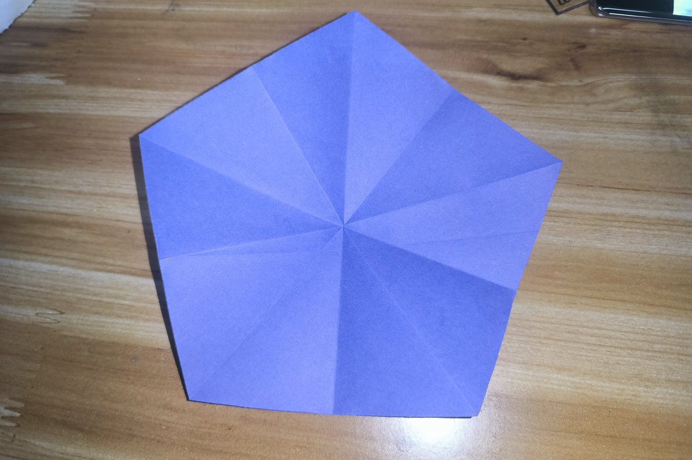
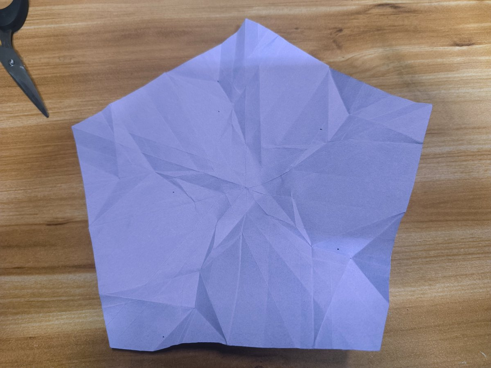
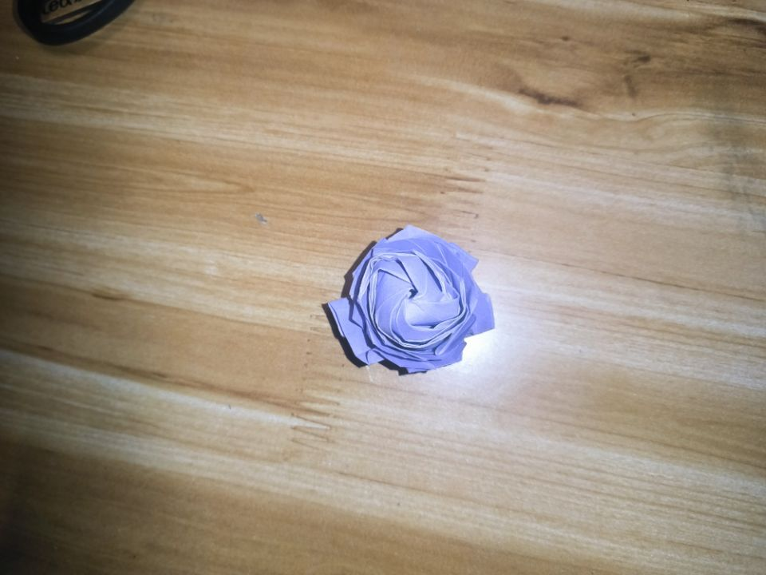

因为最近刷到太多那种说自己没用什么事都做不好的帖子，然后调侃了一下自己，表达不当好像让大家担心了，实在是不好意思(¯▽¯)ゞ
我不会因为这种小事否定自己的。
我清晰的知道自己的能力，所以能接受自己的失败。我是新手又不是天才，所以没做好也是正常的。
如果你觉得你很没用，要不然按我的思维去思考一下：我的能力只有这么多，做到这个程度已经很好了。把我好失败，我什么都做不好，改成：我很努力，我已经尽力了(￣▽￣)~*
我不会因为这种小事否定自己的。
我清晰的知道自己的能力，所以能接受自己的失败。我是新手又不是天才，所以没做好也是正常的。
如果你觉得你很没用，要不然按我的思维去思考一下：我的能力只有这么多，做到这个程度已经很好了。把我好失败，我什么都做不好，改成：我很努力，我已经尽力了(￣▽￣)~*


